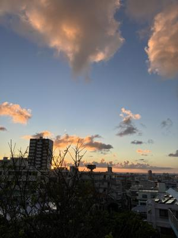
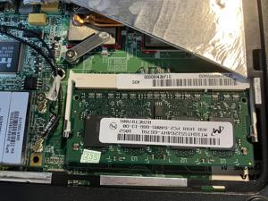
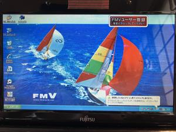
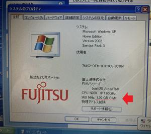

うるがいの話 ある日
最新: メモリ２ＧＢ【うるがいの話 ある日】とは 一日だけのプログです
『うるがいの話』の最新一日だけのプログで、通信料が少なく経済的だ。カニの画像をクリックすると全ての日付が載る『うるがいの話』サイトを表示します
|
|
【うるがいの話】 うるがい(ｳﾙｶﾞｲ urugai)とは、『もずくがに』の名前でとても大きくなります。 |
|---|---|
|
|
【カミマヤーの話】 猫のことを方言でマヤーといいます。カミマヤー（kamimayaa）とは、神の猫のことです。 |
|
【たながぁの音楽】 たながぁ（ﾀﾅｶﾞｰ tanagaa）とは手長えびのことで、何種類かあり大きいのは車 エビぐらいになります。 |

|
【ぶながぁの話】 ぶながぁ(ﾌﾞﾅｶﾞｰ bunagaa)とは、赤い髪の毛、赤い身体、そして身長は１ｍ２０ｃｍ ぐらい、川の蟹を食べているの目撃された。場所は沖縄県国頭郡大宜味村のと ある村僕の隣近所に住んでいる爺さんから、聞いた話です。 |
|
|
【ギーマの話】 ギーマ(giima)とは、山原の里山に咲くスズランに似た、 花を付けます。実は食べられます、 気が付くと口の周りが紫になっています。 |
2025年09月24日 (水）メモリ２ＧＢ
15:32
屋敷うがんの終わった後、虹や夕焼けの景色を邪魔する伸びすぎ
たモリンガの木を剪定する。玄関に入るとヨメが、臭い！！とい
う、なんと猫のフンを踏んでいた。その後の掃除で・・・・・、
ネ、猫を放し飼いにしては困るのですよ。モリンガが消えた夕焼
け

近頃、ウィンドウズ１０が終わるというニュースが、多くなった
。おかしくなったＰＣ１の処置を、しなければならない。その前
に実は、２００９年に買ったノートパソコン、２年前にウィンド
ウズ１０をインストールした後、余りにも遅いのでオークション
で４ＧＢのメモリを落札、設置したところ起動しなかった。
hanage335 2023.7月31日 18時01分
この度はお買い上げいただきまして、誠にありがとうございます。
先ほど、商品を発送させていただきました。
商品の到着まで、今しばらくお待ち下さいませ
うるがい 2023.8月24日 15時51分
台風６号で時間がかかりましたが、本日やっと商品うけとりました。
hanage335 2023.8月24日 15時54分
ご連絡ありがとうございます。
たしか沖縄の方でしたよね？
この度はお取引いただきまして、誠にありがとうございました。
オークションの発送が７月３１日、メモリが届いたのが８月２４日
そして、動かなかった！。
動かなかった４ＧＢのメモリ

元々は１ＧＢ、試しにと２ＧＢをオークションで手に入れ動作する
事を確認していたので、２年ふりにメモリを入れ替え、そしてハー
ドディスクもＸＰに装着、起動させる。立ち上げ時にモニタが、焼
けていたが、無事立ち上がった。で、購入から１６年も経ったこの
ノートパソコン、どうするのだろう。
２年ぶりに起動する、懐かしい

２ＧＢが認識されている
